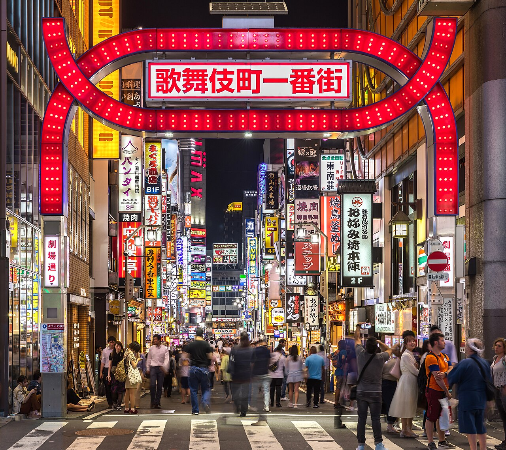
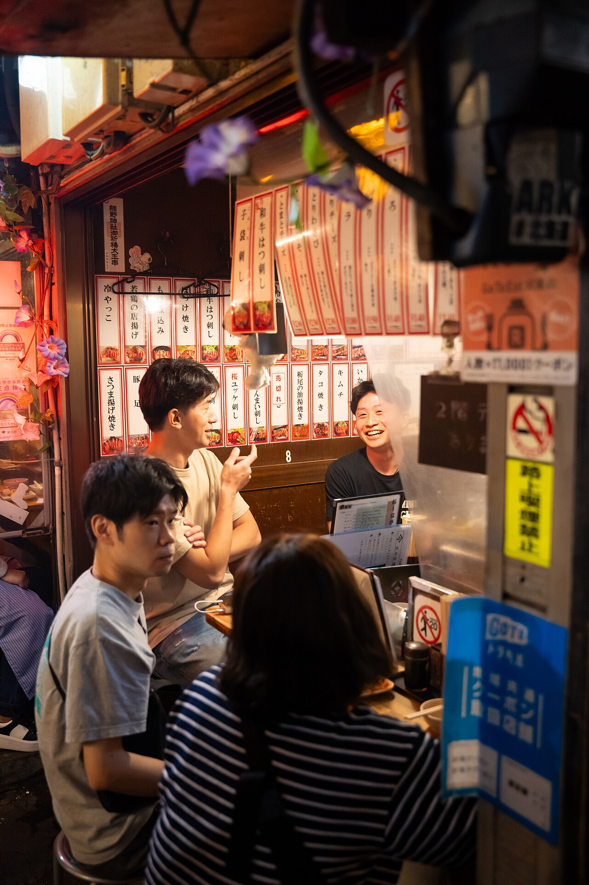
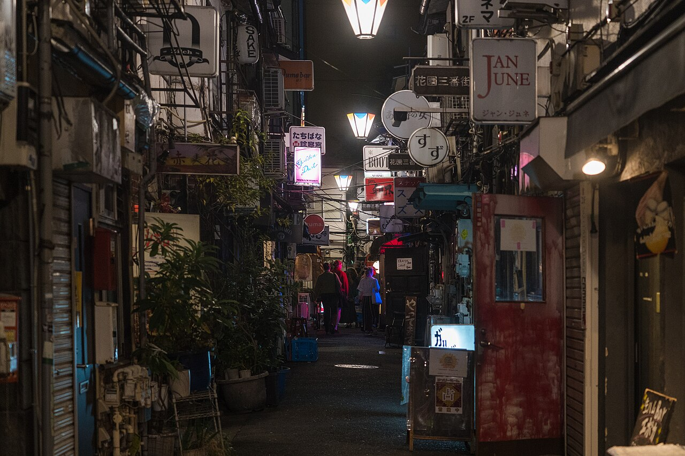

Nishi-Shinjuku, by the station
A lantern-lit alley of tiny grill shops, unchanged since the post-war years. We squeeze into a counter for yakitori skewers and a first drink — the most atmospheric start in Tokyo.



Thursday, December 25, 17:30 – 21:00 — three and a half hours, all on foot.
At the Hyatt Regency Tokyo in Shinjuku. Open in Google Maps.
Three routes below, all covering the same Shinjuku highlights in a different flavour. Just tell me A, B or C — mixing elements is fine too.
Food and drinks are pay as you go at each stop. Budgets under each route are per person, food and drink included as a guide.
The classic: grill smoke, an izakaya dinner and a tiny-bar finish — the full old-and-new Shinjuku in one night, with the Kabukicho neon and the Godzilla Head on the walk between stops.
Nishi-Shinjuku, by the station
A lantern-lit alley of tiny grill shops, unchanged since the post-war years. We squeeze into a counter for yakitori skewers and a first drink — the most atmospheric start in Tokyo.
Kabukicho side
Then a sit-down izakaya for sashimi and seasonal dishes — the proper dinner stop, with sake, beer or soft drinks as you like.
Shinjuku-sanchome side
We finish in Golden Gai, a maze of 200+ tiny bars, most seating under ten. A stroll through the alleys, and one drink in a small bar if the group fits.
Best for: first-timers who want the iconic Shinjuku night.
Casual and filling — the way locals actually eat in Shinjuku. Light on alcohol, heavy on flavour, and the same lantern alleys to finish.
Around Shinjuku Station
We start with gyoza — crisp, juicy dumplings at a local favourite. Casual, fast and very satisfying.
Around Shinjuku Station
A bowl of ramen at a popular Shinjuku shop — rich broth, springy noodles, the full local experience.
Nishi-Shinjuku, by the station
We close in the lantern alleys of Omoide Yokocho for a few grilled skewers — light on alcohol, big on atmosphere.
Best for: food-first groups and anyone who prefers a relaxed pace.
A step up for Christmas night: proper sushi first, then neon, then a quiet shrine to close. Sake at the sushi stop or in a small bar after — your call.
Shinjuku
A reserved sushi counter or table to open the night — fresh nigiri, chef's selection, a Christmas-night treat. This is the one stop we book in advance.
Kabukicho
A walk through neon Kabukicho to the famous Godzilla Head looming over the Toho building — the photo stop of the night.
Shinjuku-sanchome
We end quietly at Hanazono Shrine, lanterns glowing between the bar streets — a calm, beautiful finish, with Golden Gai's alleys right next door.
Best for: a special-occasion feel.

Yuuki Ichihara
“Anime Sensei” — anime & game tour guide, Tokyo
I guide anime fans around Akihabara and Ikebukuro — the shops, the arcades, the places only locals queue for. Ikebukuro is my second home turf: bring me a group that loves anime, games or Pokémon, and I will shape the evening around what they like.
★4.96 · 171 reviews on Airbnb
Photos via Wikimedia Commons: Kabukicho gate; Omoide Yokocho eatery and alley grill; Golden Gai at night (2024); Hanazono Shrine at night; sashimi plate; gyoza plate; salmon nigiri (Think Draw, CC BY 2.0); ramen (Wesoree, CC BY-SA 4.0). Exact restaurants are chosen and, where possible, booked once the route is picked — small alley shops cannot always take reservations, and Golden Gai bars seat very few, so a bar stop depends on the final group size. Per-person budgets are estimates for food and drink, paid directly at each stop.
Guide: Yuuki Ichihara · Anime Sensei Tours · Akihabara & Ikebukuro, Tokyo